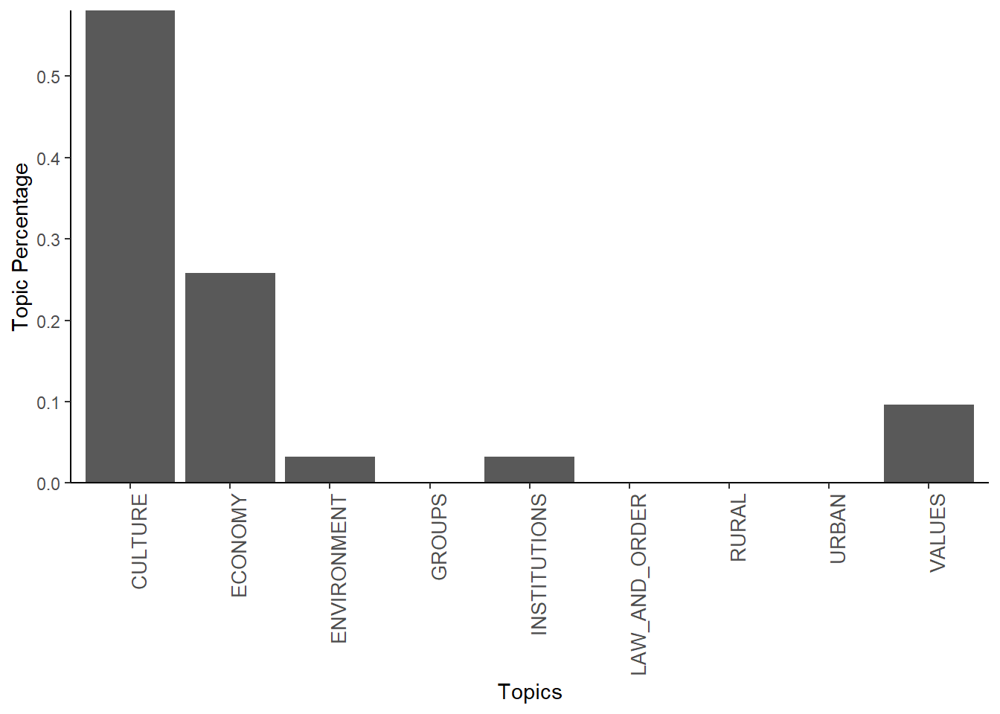

11.2 Seeded Latent Dirichlet Allocation
An alternative to the above approach is one known as seeded-LDA. This approach uses seed words that can steer the LDA in the right direction. One origin of these seed words can be a dictionary that tells the algorithm which words belong together in various categories. To use it, we will first load the packages and set a seed:
Next, we need to specify a selection of seed words in dictionary form. While we can construct a dictionary ourselves, here we choose to use the Laver and Garry dictionary we saw earlier. We then use this dictionary to run our seeded LDA:
dictionary_LaverGarry <- dictionary(data_dictionary_LaverGarry)
seededmodel <- textmodel_seededlda(data_inaugural_dfm, dictionary = dictionary_LaverGarry)
terms(seededmodel, 20)## CULTURE ECONOMY ENVIRONMENT GROUPS INSTITUTIONS
## [1,] "people" "work" "civilization" "women" "president"
## [2,] "us" "government" "production" "race" "administration"
## [3,] "new" "can" "products" "life" "executive"
## [4,] "america" "great" "productive" "men" "continue"
## [5,] "nation" "must" "produce" "spirit" "business"
## [6,] "must" "upon" "population" "mind" "office"
## [7,] "can" "shall" "relations" "task" "congress"
## [8,] "world" "may" "task" "evil" "policy"
## [9,] "time" "economic" "order" "body" "legislation"
## [10,] "let" "justice" "republic" "speaks" "law"
## [11,] "one" "opportunity" "tasks" "fail" "federal"
## [12,] "now" "children" "understanding" "built" "rule"
## [13,] "today" "life" "lies" "minds" "democratic"
## [14,] "americans" "united" "planet" "woman" "authority"
## [15,] "american" "war" "international" "set" "secure"
## [16,] "together" "country" "established" "democratic" "modern"
## [17,] "know" "progress" "supreme" "west" "agencies"
## [18,] "make" "economy" "making" "vital" "necessary"
## [19,] "every" "peace" "promote" "deeply" "international"
## [20,] "years" "national" "seeking" "mercy" "conditions"
## LAW_AND_ORDER RURAL URBAN VALUES
## [1,] "force" "public" "thank" "freedom"
## [2,] "forces" "party" "story" "history"
## [3,] "change" "permanent" "president" "human"
## [4,] "determined" "enforcement" "bless" "peace"
## [5,] "conviction" "laws" "hand" "free"
## [6,] "determination" "property" "friends" "world"
## [7,] "terror" "agricultural" "prayer" "nations"
## [8,] "powerful" "direction" "back" "rights"
## [9,] "citizen" "countrymen" "hear" "principles"
## [10,] "determine" "fail" "left" "past"
## [11,] "man" "agriculture" "lost" "help"
## [12,] "common" "institutions" "vice" "faith"
## [13,] "begin" "nation" "right" "hope"
## [14,] "forth" "islands" "much" "live"
## [15,] "happiness" "constitution" "love" "strength"
## [16,] "sides" "must" "heroes" "peoples"
## [17,] "founding" "forests" "steps" "security"
## [18,] "meaning" "court" "told" "humanity"
## [19,] "creed" "employment" "federal" "leadership"
## [20,] "dealing" "faith" "white" "maintain"Note that using the dictionary has ensured that we only use the categories that occur in the dictionary. This means that we can look at which topics are in each inaugural speech and which terms were most likely for each of the topics. Let us start with the topics first:
topics <- topics(seededmodel)
topics_table <- ftable(topics)
topics_prop_table <- as.data.frame(prop.table(topics_table))
ggplot(data=topics_prop_table, aes(x=topics, y=Freq))+
geom_bar(stat="identity")+
labs(x="Topics", y="Topic Percentage")+
scale_y_continuous(expand = c(0, 0)) +
theme_classic()+
theme(axis.text.x = element_text(size=10, angle=90, hjust = 1))
Here, we find that Culture was the most favoured topic, followed by the Economy and Values. Finally, we can then have a look at the most likely terms for each topic, sorted by each of the categories in the dictionary:
terms <- terms(seededmodel)
terms_table <- ftable(terms)
terms_df <- as.data.frame(terms_table)
head(terms_df)## Var1 Var2 Freq
## 1 A CULTURE people
## 2 B CULTURE us
## 3 C CULTURE new
## 4 D CULTURE america
## 5 E CULTURE nation
## 6 F CULTURE mustHere, we find that in the first cluster (denoted as ‘A’), the word ‘people’ was most likely (from all words that belonged to Culture). Thus, within this cluster, talking about culture often contained references to the people. In the same way, we can make similar observations for the other categories.